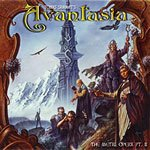

|
|
||
Tobias Sammet : Avantasia, the Metal Opera Pt. II (2002) |
|

http://www.tobiassammet.com |
1. The Seven Angels 14:15 |
9/10 |
|
Por fin está aquí la esperada segunda parte de Avantasia, la Ópera escrita por Tobias Sammet, lider de la banda alemana Edguy, en la que ha conseguido reunir a algunas de las voces más importantes del heavy metal junto con algunos de los mejores instrumentistas (por dar algunos nombres, están Kai Hansen, Michael Kiske (si, ese Michael Kiske), David DeFeis, André Matos, Henjo Richter o Timo Tolkki). Power metal melodioso, pomposo, estructurado a modo de diálogos entre distintos personajes, y con una historia bastante elaborada, este es, de momento, el mejor trabajo de Tobias Sammet y uno de los capítulos más brillantes escritos en la historia del power metal melódico, y aunque superar a la primera parte de Avantasia era imposible, Tobias Sammet ha conseguido que esta segunda parte sea otro magnífico álbum de power metal. "The Seven Angels" es un tema fantástico, que se hace corto a pesar de sus casi quince minutos. Una introducción espectacular, coros pomposos, el contraste de las voces, melodía, cambios de ritmo, partes lentas, partes vertiginosas, y todo lo que caracteriza Avantasia. El disco alterna temas más rápidos, como "No Return", con un fantástico estribillo, o "Chalice of Agony", con temas más lentos como "The Looking Glass", baladas como "In Quest For" o "Anywhere" y piezas más contundentes con voces más extremas y coros más potentes como "The Final Sacrifice". El último tema "Into the Unknown" es un final muy apropiado para Avantasia, melodioso, atmosférico y emocionante . |
||
Rubén Béjar |
||